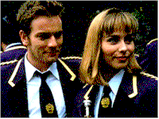

Contents | Features | Reviews | News | Archives | Store

Contents | Features | Reviews | News | Archives | Store
 |
23rd Seattle
International |
If it’s the middle of May, it must be time again to lose four weeks of badly-needed sleep. SIFF director and co-founder Darryl Macdonald and his intrepid band of merry film programmers have come up with a bumper crop of films that stagger the imagination in sheer scope alone. There are over 350 special events and features playing this year (a new record from last year), making SIFF the largest and most highly-attended festival in the U.S. There are twenty-four U.S. premieres this year, including Rough Magic, starring Bridget Fonda. In addition, the ever-popular Secret Festival, containing anything from new films fresh from the lab to old favorites fresh from archival restoration, has already proved to be, as usual, one of the hottest tickets around; there are no more passes available for love or money, or both. Experiencing the festival is exhilarating, but exhausting; the only consolation you have, after resorting to toothpicks to prop your eyes open when the triple-shot lattes have failed, is in knowing that poor Darryl suffers the worst of everyone. You don’t even have to keep track of time; just look at Darryl’s increasingly wan face and count the number of tiered rings that congregate under his eyes. Three tiers means you’re on the third week, and it’s time to play catch-up before the closing gala on June 8.
Among the special events at this year’s Festival is a tribute to filmmaker Bertrand Tavernier, who will be present at the screening of his most current film on May 19, and to receive a special achievement Space Needle Award. Tavernier’s new film, Captain Conan, is a mordantly insightful meditation on the horrors of war and their effects on those obliged to fight it, as seen through the eyes of a renegade French officer during World War I. Despite the connotations of Schwarzenegger that may attach themselves to a mispronunciation of the hero’s surname, the film shares a far greater commonality with Kubrick’s anti-war film, Paths of Glory. Other Tavernier films up for retrospection include the wonderful Round Midnight from 1986 and the gritty police dramedy, L627 from 1992. The premiere of Conan excepted, each of the other Tavernier films have their own Saturday slot (12:30, at the Egyptian theatre), and – even better – the admission price is easy to take: it’s free. If you haven’t seen much of Tavernier’s work, or are trying to fill a few gaps in your auteurist notebook, this is a weekly bargain not to be missed.
For those who love the smell of rarely-screened prints in the morning, there is an archival series containing an early Frank Capra silent film from 1927, but the real treat here is a special event surrounding one of Tod Browning’s most perverse films prior to the infamous Freaks (1932). In 1927’s The Unknown, Lon Chaney plays a knife-thrower who falls in love with the star of the circus (a very young Joan Crawford). Unfortunately, the object of his affections has an aversion to men who manhandle her (literally). So, Chaney’s character has his arms amputated, only to discover that the fair maiden has "cured" her affliction by having a fling with the circus strongman, and now finds armless men repulsive. Naturally, the double rejection makes Chaney’s character very, very angry, and he seeks revenge. Needless to say, Freudians have had a field day analyzing this film, and you can, too, by showing up at the King Cat Theatre on May 25 at 6:30 p.m. (Note: you will require a special ticket for this show, even with a full-series pass).
 Speaking of galas, the opening night film this year (on May 15) is Griffin
Dunne’s first feature film, Addicted to Love,
scheduled to open nationwide on May 23. Starring Meg Ryan, Matthew Broderick, Kelly
Preston and Techky Kayro. Ryan and Broderick play jilted lovers who seek to play a
game of "Gaslight" against their exes, who have moved in together. Aided by
technology and vulnerability, the result is a sometimes uproarious madness, which
threatens to come undone when an unexpected complication enters their lives. In style and
tone, Addicted to Love likens itself to the screwball comedies of the 1930s, when
love conquered all hostilities by the final reel; unfortunately, the film tends to lose
momentum when the lives of the characters reaches its impasse, leaving only an unpalatable
nastiness unconcealed by wit, and achieves only half-hearted success in finding its way
back. Despite this problem, we’ll see how it does as it opens against a different
form of nastiness in Jurassic Park: The Lost World.
Speaking of galas, the opening night film this year (on May 15) is Griffin
Dunne’s first feature film, Addicted to Love,
scheduled to open nationwide on May 23. Starring Meg Ryan, Matthew Broderick, Kelly
Preston and Techky Kayro. Ryan and Broderick play jilted lovers who seek to play a
game of "Gaslight" against their exes, who have moved in together. Aided by
technology and vulnerability, the result is a sometimes uproarious madness, which
threatens to come undone when an unexpected complication enters their lives. In style and
tone, Addicted to Love likens itself to the screwball comedies of the 1930s, when
love conquered all hostilities by the final reel; unfortunately, the film tends to lose
momentum when the lives of the characters reaches its impasse, leaving only an unpalatable
nastiness unconcealed by wit, and achieves only half-hearted success in finding its way
back. Despite this problem, we’ll see how it does as it opens against a different
form of nastiness in Jurassic Park: The Lost World.
Other films of note for the upcoming week include Hard Core Logo is a mockumentary about the travails of a has-been punk rock band and the little psychodramas its members undergo as they attempt to get their act together during a mini-tour across Western Canada. HCL is a hilarious Canadian version of "This is Spinal Tap" which boils down the experience of looking for Canada on the road down to its unvarying essentials: dismal truck stops and the non-stop bleating of Susan Jacks’ vocals on Which Way You Goin’ Billy? as the anthem of obligation (hardly "of choice"). Mark Herman’s Brassed Off (otherwise known as the latest Ewan McGregor film) is a comedy about miners in a fictional Yorkshire town who face redundancy when their mine is threatened with closure (it’s funnier than the description allows for), will play this week, as will Peter Duncan’s Children of the Revolution, a satire about an Australian leftist in the late 1940s who was so committed to the cause that, through a series of circumstances, she ends up giving birth to Joseph Stalin’s love child (just in case there are any doubts or conspiracy theorists, I should mention that this is a fictional satire). Time for another latte…
Next Week: Reports from the box-office jungle, and about Stephen Frears’ latest film, The Van.
Contents | Features | Reviews | News | Archives | Store
Copyright © 1999 by Nitrate Productions, Inc. All Rights Reserved.